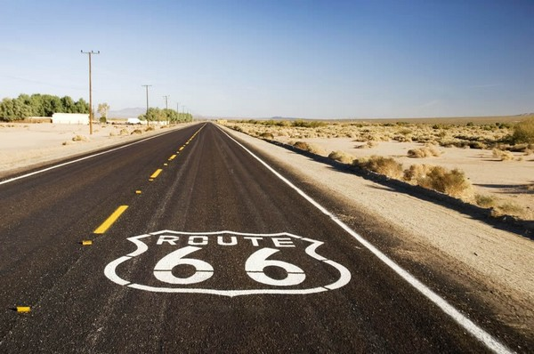

Etats-Unis & road-trip mythique
Les États-Unis d’Amérique, appelé aussi le pays de l’Oncle Sam, est une des destination les plus prisées au monde. C’est le rêve américain, quoi ! Des paysages variés, une faune et une biodiversité préservées, une culture « comme dans les films » et ses presque 60 parcs nationaux contribuent amplement à sa renommé internationale. Les USA sont un endroit mythique. Certainement parmi les plus mythiques sur terre. Y faire un road trip, est un must-do ! Rien de tel pour découvrir l’immensité de ce pays… Enfin, il y a aussi le vélo, mais là, mieux vaut avoir des mollets en béton !
De l’Alaska à l’Oregon, en passant le Texas ou encore la Floride, être itinérant c’est jouir à fond de la liberté et de ces grands espaces. Quatre fuseaux horaires qui s’étalent sur 50 états américains et presque 10 millions de km² de superficie (c’est le 4ème pays le plus vaste au monde !), les USA offrent une variété d’éco-systèmes uniques au monde.
- 
Quand partir pour un road trip aux USA
C’est à mon sens, la première question à se poser si vous envisagez un road trip sur le territoire américain. Enfin, pour être précis, je dirai qu’il faut réfléchir à la chose en même temps que l’itinéraire de votre road trip mais aussi en fonction du prix du billet d’avion pour y aller. Gardez cette idée en tête. Évidemment, vous pouvez partir aux USA toute l’année, on est d’accord. Existe t-il une meilleure période pour visiter les grands lacs ? L’immensité de l’Alaska ? La Sierra Nevada ? Le Cap Cod ? Pour autant, selon vos envies de destination, il sera nécessaire de se caler sur une « saison idéale », car visiter le Grand Canyon au mois de décembre, c’est très différent que de la faire en plein mois d’aout… (enfin surtout beaucoup plus froid…oui oui, il neige dans cette zone très fréquentée l’hiver !).
Le pays est immense et les possibilités de circuit aux USA sont presque à l’infini. Vous pouvez tout à faire voir du désert, des montagnes, des ours, des dauphins, des forêts à perte de vue, tout ça dans le même voyage. Vous pouvez aussi décider de couper en plusieurs road trip. Pour les amoureux des parcours hors des sentiers battus et des zones reculées, il y a de quoi se faire plaisir aussi ! Tout le monde n’est pas obligé de se rendre à Mesa Verde, au Lac Powell ou Tahoe, le majestueux Arches National Park, etc.
Côté climat, voilà ce qu’il faut retenir selon moi : le Sud des États-Unis est dans l’ensemble bien plus chaud que le Nord. Partir au Texas ou en Louisiane en plein été relève presque du suicide ! Je ne vais pas vous donner les températures et précipitations moyennes sur l’ensemble des États-Unis. Il y a des sites très bien faits pour ça, notamment ou-quand-partir par exemple. Commencez donc par regarder la météo des zones qui vous intéresse. Il est fort probable que vous n’ayez pas la possibilité de choisir vos vacances, par exemple par rapport à vos congés.
Sachez que la majorité des touristes prévoit un road trip sur le sol américain entre Mai et Septembre (en gros) et qu’une très grosse majorité se retrouve en Juillet/Aout. Ce sont les périodes les plus chaudes évidemment. Il faut aussi savoir que même en plein été, il peut faire très froid la nuit dans certaines zones. Après avoir passé plusieurs nuits à zéro degré à Yellowstone ou Grand Téton, je vous le confirme. Attention donc à la saison par rapport aux endroits où vous souhaitez aller. A l’inverse, certains lieux (Utah, Arizona, Nouveau Mexique, etc.) peuvent être très chaud la journée.
Pour résumer, je conseille :
- En Hiver : vous pouvez par exemple opter pour road trip aux USA sur la côte est des États-Unis (sous la neige) ou la côte Ouest, à la découverte des grandes villes américaines et leurs alentours (New York, San Francisco, etc.). Visiter New-York sous la neige ou le Golden Gate doit être assez sympa en hiver je pense ! Cela peut-être aussi l’occasion pour les fans de sport d’hiver de découvrir le Nord-Ouest des USA pour un peu de ski ou de snowboard, comme l’Utah, l’Idaho ou le Montana. Dans l’ensemble, sur les états classiques des USA pour un road trip, il pourra y faire froid, voire très froid, et une minorité des gens se lanceront dans la visite de Monument Valley, le Grand Canyon ou Brice Canyon sous la neige. Attention aussi le long de la côte pacifique, il ne fait pas si chaud que l’on croit ! Un des gros avantages, c’est qu’il y aura beaucoup moins de monde évidemment. Sachez que :
- La majorité des parcs de l’ouest américain seront ouverts.
- C’est la saison idéale pour visiter les zones les plus chaudes (Vegas, la mythique vallée de la mort/Death Valley, etc.).
- Certains parcs pourront être totalement ou partiellement fermés (Yellowstone, Yosemite, Sequoia National Park, etc.).
- L’été : vous pouvez envisager de partir n’importe où dans les États-Unis. La seule limite je dirais sera la chaleur écrasante la journée dans certaines zones. Je pense en particulier à l’Arizona, l’Utah et tout le Sud des États-Unis (Texas, etc.). Autre point négatif, le monde sur place. Vous ne serez jamais seul pour observer toutes ces merveilles, et il faut s’attendre à voir des touristes. Sachez que certains parcs ne sont ouverts que durant cette période (Yellowstone), ou du moins c’est durant cette saison que vous n’allez pas mourir de froid normalement (Glacier).
A mon sens, je conseillerai de réaliser un voyage aux États-Unis durant les intersaisons, soit les mois de Mai/Juin et Septembre/Octobre. Beaucoup n’auront pas le choix (comme moi) à cause des vacances scolaires par exemple et une majorité réaliseront le road trip dans l’Ouest Américain entre San Francisco et Las Vegas. Ce n’est donc pas une mauvaise idée d’éviter les grosses chaleurs et les touristes à mon sens, non ? Voyager hors saison, en plein hiver permettra de se balader en étant quasiment seul au monde. Vous allez aussi vous loger pour pas trop cher (baisse des prix).